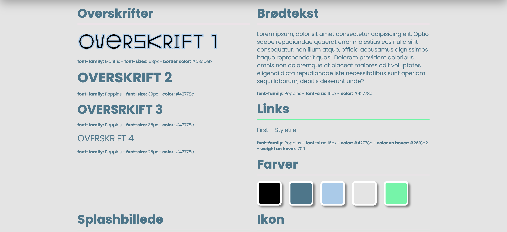
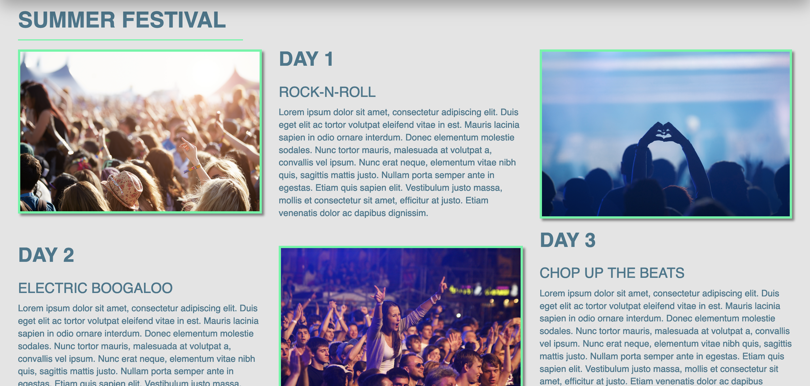
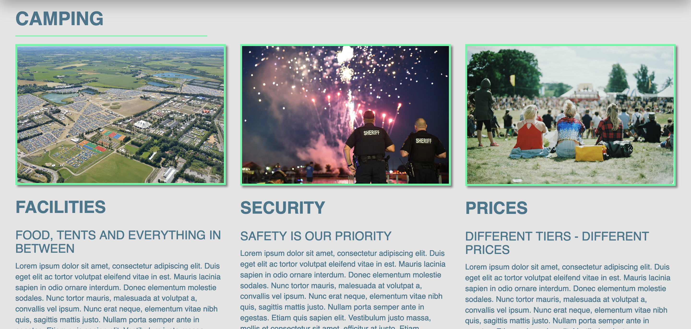
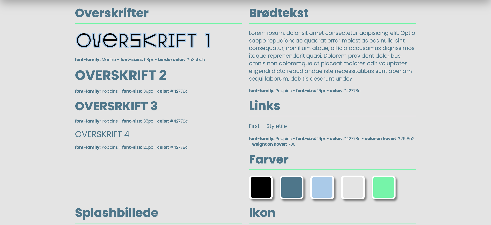
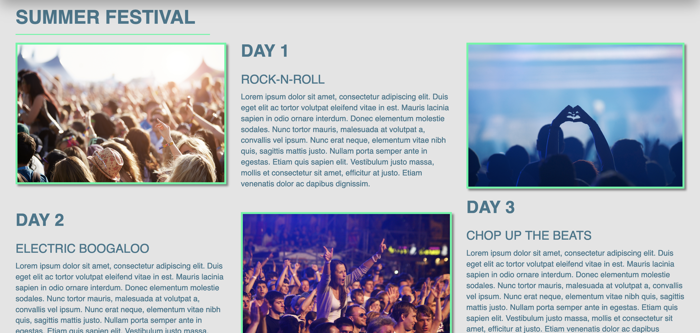
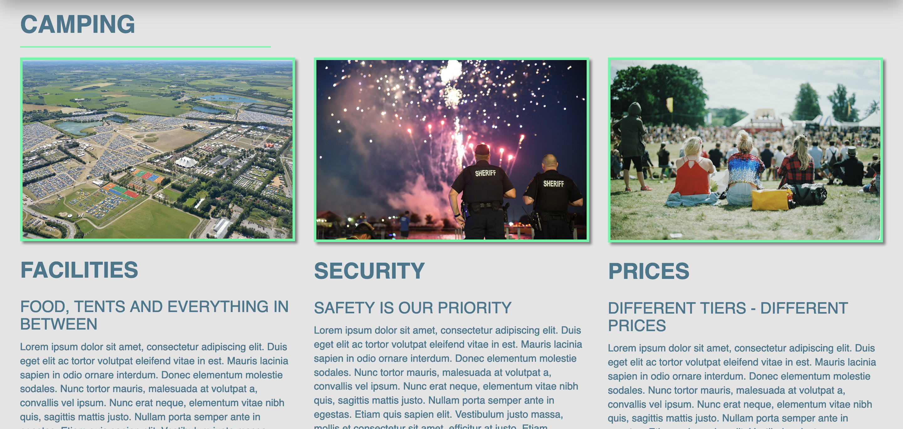

Grundlæggende Web
I uddannelsens første tema, Grundlæggende Web, blev vi introduceret til HTML og CSS, som er webudvikling og webdesigns byggesten. Vi fik tildelt en stilart, som vi skulle udvikle vores individuelle hjemmeside ud fra. Vi blev også introduceret til reasearch-metoden moodboard, som jeg benyttede til at få en bedre og bredere forståelse for min tildelte stil, brutalisme/brutalistisk webdesign. Herefter udviklede jeg et styletile, baseret på min nye viden omkring brutalisme, med b.la. farver og typografi. Mit styletile skulle jeg senere bruge for at designe min hjemmeside. Flere af disse metoder blev udviklet i adobe XD, som er et program hvori man hurtigt og nemt kan skabe prototyper og løsninger ifm. webdesign. Vi fik tildelt flere layoutdiagrammer og wireframes til vores hjemmeside. Disse værktøjer benyttes for at overskueliggøre hjemmesidens opbygning. Hjemmesiden skulle være responsiv, dvs. at den skulle (i nogle tilfælde) ændre layout på forskellige enheder og gøre det nemmere at se alt indholdet. Hertil blev vi introduceret til både grid- og flexbox, samt media query. Grid- og flexbox bliver brugt til at positioner html-elementer efter eget ønske. Grid benyttede jeg til b.la. at skabe en mosaik/gitter af billeder og flex benyttede jeg for at skabe ligevægt og positionere elementerne med passende mellemrum vha. justify-content. Media query benyttede jeg for at tildele html-elementer specifikke CSS-regler når enhedens (eller mediets) skærmstørrelse ændrede sig. Jeg brugte det b.la. til at ændre mit splashbilledes placering og rækkefølgen af visse html-elementer. Mit splashbillede udarbejdede jeg i Photoshop, med udgangspunkt i det gyldne snit (fibonnaci-sekvens) og min tildelte stilart. Billedet kan ses nederst på siden og min endelige, responsive webside kan ses her.
 




